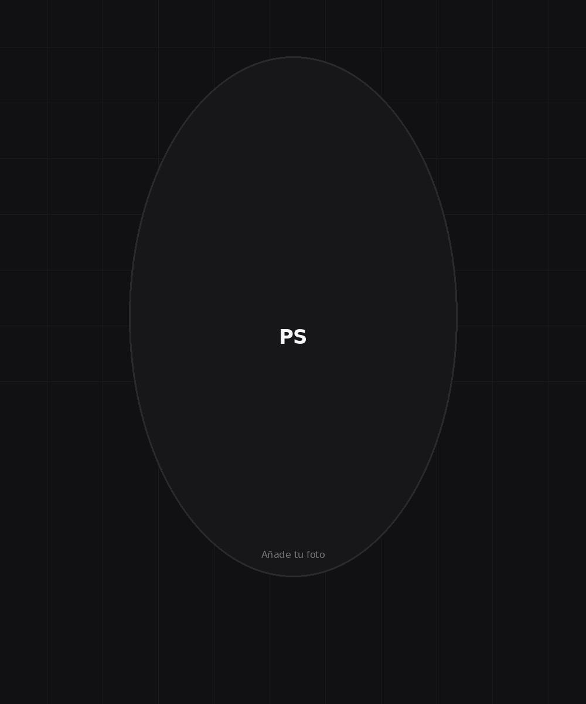
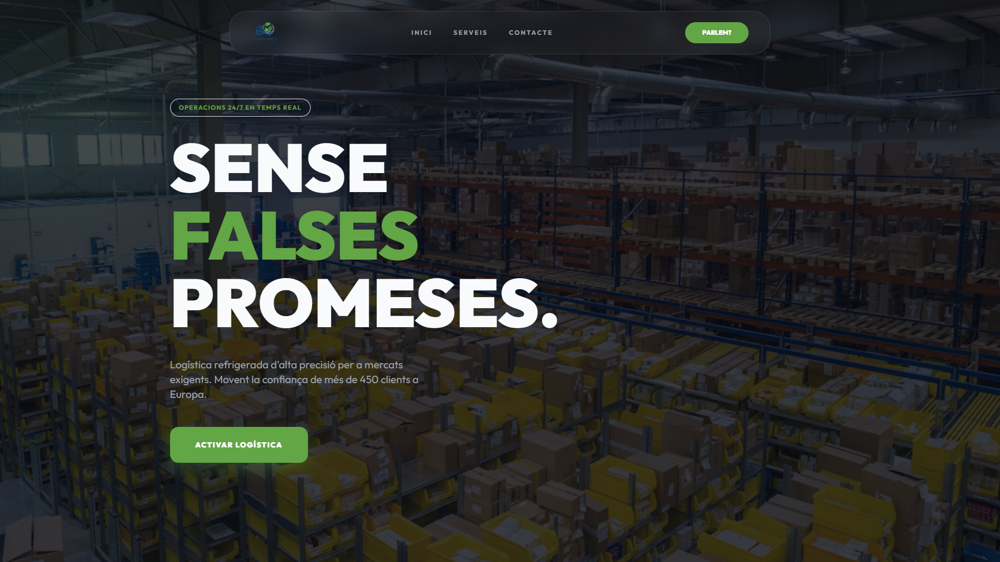
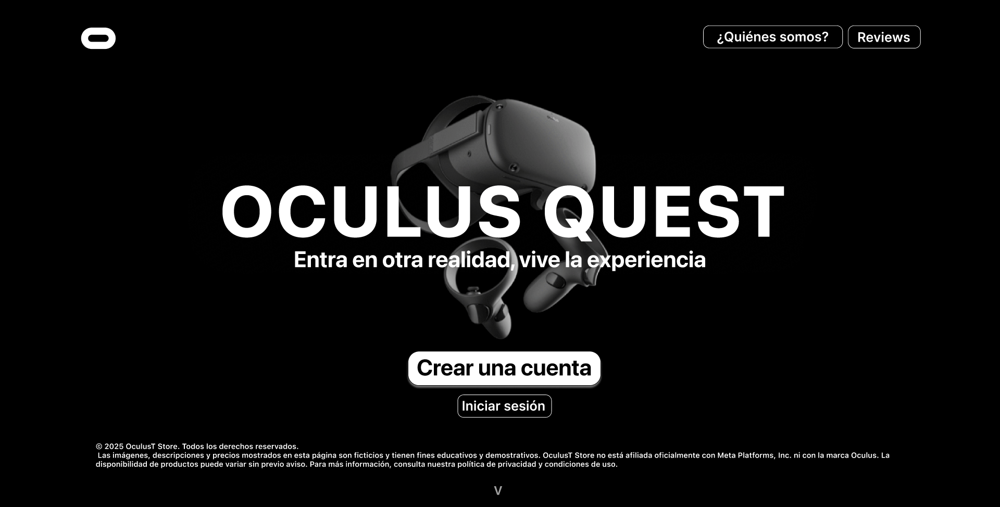
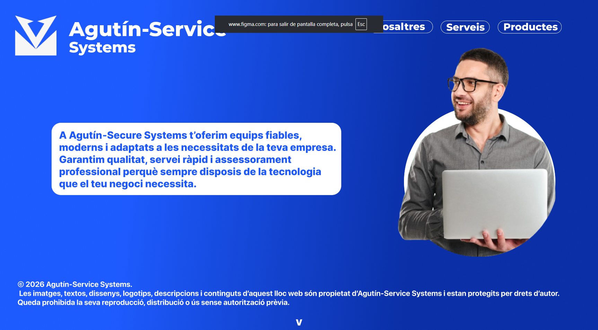

2024 — 2026
CFGM
Sistemas Microinformáticos y Redes
Escola Pia de Mataró
Sistemas · Hardware · Redes · SoporteDAM · SMR · SYSTEMS · SOFTWARE
Estudiante de Desarrollo de Aplicaciones Multiplataforma y Técnico en Sistemas Microinformáticos y Redes.
“Don't be afraid of falling, be afraid of not trying.”

01 / SOBRE MÍ
👋 Hola, soy Pol.
Técnico en Sistemas Microinformáticos y Redes (SMR), con experiencia en soporte técnico, mantenimiento de equipos informáticos, administración básica de sistemas y resolución de incidencias.
Me apasiona la tecnología y disfruto aprendiendo continuamente sobre nuevas herramientas y soluciones informáticas. Mis proyectos me han ayudado a reforzar la resolución de problemas, el trabajo en equipo, la organización y la adaptación a nuevos entornos.
Actualmente estoy cursando DAM para ampliar mis conocimientos en programación y desarrollo de software, combinando mi experiencia en sistemas con el desarrollo de aplicaciones.
02 / FORMACIÓN
CFGM
Escola Pia de Mataró
Sistemas · Hardware · Redes · SoporteCFGS · ACTUALMENTE
DAM
Programación · Bases de datos · Desarrollo de software03 / PROYECTOS
Una selección de proyectos realizados durante SMR, entre desarrollo web y prototipado de interfaces.

DESARROLLO WEB
Creación de una web corporativa con enfoque visual, estructura responsive y experiencia de navegación clara.

UI / UX · FIGMA
Prototipo de interfaz realizado en Figma, trabajando jerarquía visual, estructura y navegación.
Ver diseño ↗
UI / UX · FIGMA
Propuesta de web para una empresa ficticia, centrada en presentación, estructura y experiencia de usuario.
Ver diseño ↗04 / TECH STACK
LENGUAJES
HERRAMIENTAS
SISTEMAS
EN PROGRESO
05 / MI FORMA DE TRABAJAR
Me gusta entender la tecnología a través de proyectos reales.
Analizar, probar, corregir y volver a intentarlo forma parte del proceso.
Una buena solución también debe ser clara, usable y fácil de mantener.
06 / CONTACTO
Estoy abierto a seguir aprendiendo, participar en proyectos y conocer nuevas oportunidades dentro de la informática y el desarrollo de software.
aromi.serrano.pol@gmail.com ↗